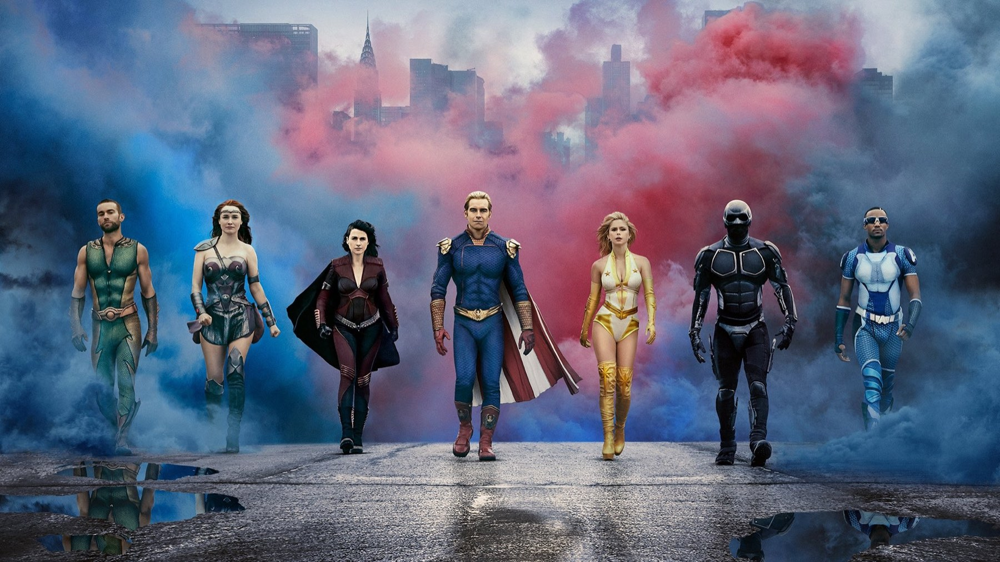
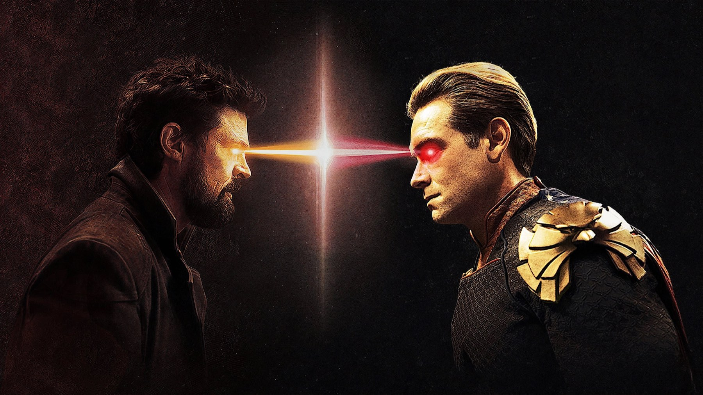

The Boys – Stagione 2
Stormfront, un Homelander che perde il controllo e una stagione che parte piano e dalla terza puntata non si ferma più
La seconda stagione di The Boys è quella in cui la serie smette di prendere in giro i supereroi e comincia a prendere in giro noi. Il bersaglio non è più soltanto la multinazionale che vende eroi come fossero merendine: è il modo in cui l'odio si traveste da intrattenimento, si fa condividere e trova sempre un volto sorridente che lo porti in tv. Il guaio è che i primi due episodi girano a vuoto, perché devono presentare troppe storie prima di trovare la strada.
I Boys sono ricercati. Billy Butcher ha scoperto che sua moglie Becca è viva e che Vought la tiene sotto controllo insieme al figlio. Hughie e gli altri, intanto, provano a smascherare l'azienda con il governo alle calcagna. Tra i Sette, invece, arriva Stormfront, interpretata da Aya Cash, che entra nel gruppo senza l'approvazione di Homelander e finisce per sfidarlo sul suo terreno.

Perché Stormfront cambia tutto?
Perché dà finalmente a Homelander qualcuno che non si inchina. Nella prima stagione era un dio capriccioso circondato da gente che non osava contraddirlo; qui invece trova una persona che non ha paura di lui e gli ruba la scena. E non è un caso, perché la scelta viene da lontano. Nel fumetto di Garth Ennis e Darick Robertson Stormfront è un uomo, ed Eric Kripke ha spiegato di averla trasformata in una donna per dare a Homelander l'incubo peggiore: una donna che non lo teme e che gli porta via i riflettori, e lui non lo sopporta perché, parole di Kripke, è «un enorme buco di insicurezza».
Il quinto episodio, We Gotta Go Now, mostra fin dove arriva quella insicurezza. Circola un video in cui Homelander, durante uno scontro, uccide dei civili innocenti, e la sua popolarità crolla. A rimetterlo in piedi è proprio Stormfront, che con i social e una valanga di meme gli ripulisce l'immagine; nello stesso episodio i due diventano amanti. Antony Starr sfrutta questa debolezza fino in fondo: il suo Homelander resta spaventoso, ma adesso lo vediamo geloso e pronto a cedere pur di sentirsi capito. Un mostro con la fame di approvazione di un adolescente: non lo avevamo mai trovato così inquietante, perché adesso la sua ferocia ha un motivo, il bisogno di essere amato.
Aya Cash regge il confronto con un personaggio costruito sui toni dei social: sorriso largo, parole d'ordine rassicuranti, veleno sotto. Lei stessa ha raccontato di essersi divertita a «essere davvero cattiva», ma che a volte era difficile. Lo showrunner voleva parlare di suprematismo bianco e di come le ideologie d'odio si diffondono online, e il rischio della predica c'era. La serie lo evita perché, invece di spiegare, mostra: la conferenza stampa che raccontiamo qui sotto dice sull'odio più di qualsiasi discorso.
La scena che vale la stagione
Arriva alla fine della terza puntata, Over the Hill with the Swords of a Thousand Men. Stormfront insegue Kimiko e suo fratello Kenji dentro un palazzo di appartamenti e, mentre lo attraversa, uccide ogni inquilino nero che incontra. Sul tetto sopraffà i due fratelli, spezza i polsi a Kenji e lo uccide con un insulto razzista. Homelander arriva furioso perché lei ha disobbedito agli ordini e gli ha tolto una preda che considerava sua, ma lei gli risponde con un disprezzo compiaciuto. Ecco la donna che non lo teme e gli ruba la scena, l'incubo che Kripke aveva in mente quando l'ha tolta dal fumetto e riscritta. Poi il colpo di grazia: Stan Edgar, il capo di Vought, convoca la stampa e celebra Stormfront come un'eroina, mentre lei attribuisce a Kenji la strage. I Boys guardano in tv, e con loro Homelander e Kimiko. La strage l'ha compiuta lei, ma gli applausi li raccoglie lei: è qui che la stagione dice la sua verità, cioè che ciò che succede conta meno di come lo si racconta.
Nella stessa puntata Annie porta una fiala di Composto V a un telegiornale e rivela al mondo come nascono i supereroi. È il suo gesto più coraggioso, ma A-Train la affronta appena scopre che è stata lei. La verità arriva in tv, eppure a vincere è la conferenza stampa di Edgar. Erin Moriarty ha detto che l'oscurità della stagione è «abbastanza realistica»: è la frase giusta, perché i momenti peggiori non sono quelli splatter, ma quelli in cui riconosciamo qualcosa che abbiamo già visto fuori dallo schermo.

Cosa non funziona
La partenza, prima di tutto, perché nei primi due episodi la serie tiene in piedi insieme la fuga dei Boys, la scoperta che Becca è viva e l'ingresso di Stormfront tra i Sette, e accumula storie senza lasciare a nessuna il tempo di prendere quota: la stagione si accende soltanto con la terza puntata. Christian Colli, su Multiplayer.it, trova lento l'avvio e prevedibile la storia tra Hughie e Annie, e su tutti e due i punti gli diamo ragione.
Il secondo problema sono proprio Hughie e Annie. Nella terza puntata, nelle fogne, Homelander ordina ad Annie di uccidere Hughie e minaccia entrambi se lei si rifiuta: la scena regge perché la minaccia è vera, ma è l'eccezione. Il resto della loro storia d'amore ci è sembrato fermo alla stagione precedente, mentre Homelander si sgretola nella stanza accanto. Anche qualche trovata punta sullo shock più che sul racconto: sempre nella terza puntata Butcher sperona con la barca la balena su cui cavalca The Deep e la uccide, in una sequenza girata con oltre 150 galloni di sangue finto. Il sangue è tanto, la balena muore davanti agli occhi di The Deep, eppure a noi è sembrata una provocazione messa lì per far parlare.
Il confronto con le altre stagioni aiuta a capire il difetto. Nella nostra recensione della stagione 5 abbiamo scritto che nel finale la serie corre troppo, al punto da lasciare indietro diversi personaggi. Qui invece accade l'opposto: l'inizio è fin troppo prudente, con troppe storie da presentare. Una volta partita, però, la stagione trova la sua cattiveria e non la molla più, e il lavoro su Homelander pesa più dell'azione.
Un successo che si è visto subito
Il pubblico ha premiato la serie fin dal primo weekend, quando erano usciti insieme i primi tre episodi: in quei giorni ha raggiunto il 7,2% dello streaming negli Stati Uniti, più di Stranger Things 3 (5,8%) e di The Mandalorian 1 (4,4%), e al 9 ottobre contava oltre 1,06 miliardi di minuti visti. Su Rotten Tomatoes ha il 97% di recensioni positive su 106, su Metacritic 80 su 100. Agli Emmy è stata candidata come miglior serie drammatica e per la sceneggiatura di Rebecca Sonnenshine.
Per chi è e per chi no
È per chi ha amato la prima stagione e vuole vedere dove va la storia, perché qui la serie smette di essere una burla cattiva e diventa un racconto sul potere. Chi non ha mai visto The Boys deve invece partire dalla prima stagione, perché qui il destino di Becca e il potere di Homelander danno per scontato tutto ciò che è successo prima. E chi ha mollato la prima stagione per la violenza sappia che qui la dose cresce e cambia natura: nella strage del palazzo, alla terza puntata, gli inquilini muoiono per il colore della pelle. Le otto puntate sono su Prime Video con tutte le altre, quindi si recupera la serie dall'inizio senza cambiare abbonamento.
Una stagione che per due episodi va col freno a mano e poi trova nel rapporto tra Homelander e Stormfront la satira più cattiva della serie: la sua vera forza è mostrare che un'immagine pubblica pesa più della verità. Da vedere, a patto di superare le prime due puntate.
Domande frequenti
Quanti episodi ha la seconda stagione di The Boys?
Otto, usciti su Prime Video dal 4 settembre al 9 ottobre 2020: i primi tre insieme, poi uno a settimana.
Chi è Stormfront in The Boys 2?
È la nuova eroina dei Sette, interpretata da Aya Cash. Nel fumetto è un uomo: la serie l'ha trasformata in una donna.
Dove vedere The Boys?
Tutte le stagioni sono su Prime Video, incluse nell'abbonamento.
Fonti consultate (8)
- Wikipedia – The Boys season 2
- Wikipedia – Stormfront (The Boys)
- Multiplayer.it – The Boys 2, recensione (Christian Colli)
- Rotten Tomatoes – The Boys stars break down the season 2 finale
- Wikipedia – Over the Hill with the Swords of a Thousand Men
- ET Online – Aya Cash e Eric Kripke sul cambio di genere di Stormfront
- The Cinemaholic – The Boys 2x05, recap
- TMDB – The Boys